Подборку собрали 6 ноября, прошедшие события скрыты. Свежая афиша — на главной
Подборка для компании · данные на 15 октября
Куда пойти с друзьями в Москве
154 плана для компании: бани, бары и раковарни, боулинг, тиры, караоке и компьютерные клубы. Ниже — ещё 149 мест, куда удобно идти большой компанией, и 45 событий на ближайшие две недели. Отметь пару вариантов и кинь ссылку в общий чат: каждый выберет, куда и в какие дни может.
- 154 плана
- 149 мест
- 45 событий
Планы для компании 24 из 154
- Ростокинский акведук · Акведук XVIII века · м. ВДНХ
- 12 минут пешкомИнкубо · Квест с актёрами
В сумерках пройти вдоль каменного Ростокинского акведука 1780-х, а потом хоррор в «Инкубо» — «Пожиратель душ» или неоновая «Ночь в Токио» с сильными актёрами.
Открыть план: Акведук в сумерках и хоррор-квестПозвать сюда: Акведук в сумерках и хоррор-квест
Фото: Dmitry Ivanov., CC BY-SA 4.0 · Wikimedia Commons
- Краснопресненские бани · Баня и хамам · м. Улица 1905 года
- 13 минут пешкомРаковарня · Раки и караоке
Финская сауна, хамам и бассейн в Краснопресненских банях, а потом через Трёхгорку в «Раковарню» — раки, морепродукты и караоке до шести утра.
Открыть план: Баня на Пресне и ракиПозвать сюда: Баня на Пресне и раки
Фото: Никонико962, CC BY-SA 4.0 · Wikimedia Commons
- Mega Ice в «Авиапарке» · Крытый каток · м. ЦСКА
- 1 минута пешкомLali · Узбекский ресторан
- 19 минут пешкомТрели · Караоке с кабинками
Покататься на крытом катке «Авиапарка», поужинать в Lali там же, а потом закрыться в своей кабинке караоке «Трели» у «Аэропорта» — поют до 6 утра.
Открыть план: Лёд, плов и своя караоке-кабинкаПозвать сюда: Лёд, плов и своя караоке-кабинка
Фото: A.Savin, Free Art License · Wikimedia Commons
- Парк 850-летия Москвы · Парк · м. Марьино
- 6 минут пешкомЧеддер · Пивной ресторан
Пройтись по набережной Парка 850-летия Москвы, а потом в «Чеддер»: пиво и сидр в фирменных бокалах, бургеры и трансляции — бармены расскажут про каждый сорт.
Открыть план: Набережная в Марьине и сидрПозвать сюда: Набережная в Марьине и сидр
Фото: Brateevsky, CC BY-SA 3.0 · Wikimedia Commons
- Sky Padel · Падел · м. Выставочная
- 4 минуты пешкомBamboo.Bar · Ресторан с террасой
Корт на четверых под стеклянным куполом «Афимолла» — играешь в окружении башен Сити, а потом ужин на террасе Bamboo.Bar прямо в квартале.
Открыть план: Падел среди небоскрёбовПозвать сюда: Падел среди небоскрёбов
Фото: BpbAlonka, CC BY-SA 3.0 · Wikimedia Commons
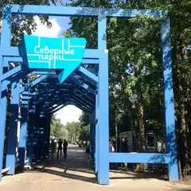
- Парк «Северное Тушино» · Парк · м. Планерная
- 2 минуты пешкомЛазертаг Арена «Военный бункер» · Лазертаг
Подводная лодка-музей и экраноплан в парке «Северное Тушино», а рядом — круглосуточный лазертаг в декорациях военного бункера, час игры — 1 100 ₽.
Открыть план: Подлодка и лазертаг в бункереПозвать сюда: Подлодка и лазертаг в бункере
Фото: Mardiver, CC0 · Wikimedia Commons
- Le Mans · Картинг · м. Шелепиха
- 8 минут пешкомСмотровая iCITY · Бесплатная смотровая и коворкинг
- 10 минут пешкомRUSKI · Ресторан на 85-м этаже
Десятиминутный заезд по 650-метровой трассе Le Mans у «Шелепихи», потом бесплатная смотровая iCITY и ужин на 85-м этаже башни «ОКО» в RUSKI.
Открыть план: После работы: картинг и 85-й этажПозвать сюда: После работы: картинг и 85-й этаж
Фото: Дарья Симоненко, CC BY-SA 4.0 · Wikimedia Commons
- Пятницкая улица · Улица · м. Новокузнецкая
- 5 минут пешкомЕвгенич · Караоке-рюмочная
Пройтись по вечерней Пятницкой мимо купеческих домов, а потом в рюмочную «Евгенич» в духе 80-х: караоке с ведущим, хоровое пение и настойки до 6 утра.
Открыть план: Пятницкая и народное караокеПозвать сюда: Пятницкая и народное караоке
Фото: Retired electrician, CC0 · Wikimedia Commons
- Дом Культур · Ресторан-бар · м. Сухаревская
- 1 минута пешкомМосковский стендап клуб (Comedy 34) · Стендап-клуб
Ужин в ресторане-баре «Дом Культур» в старой усадьбе на Сретенке, а по соседству Comedy 34: открытые и ночные микрофоны от 400 ₽ и «чёрный» стендап.
Открыть план: Ужин в усадьбе и ночной микрофонПозвать сюда: Ужин в усадьбе и ночной микрофон
Фото здания: NVO, CC BY-SA 3.0 · Wikimedia Commons
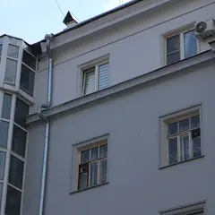
- Atlantica Seafood · Рыбный ресторан · м. Парк Победы
- 3 минуты пешкомКутузовский бильярдный клуб · Бильярдный клуб
Устрицы и рыба по разумным ценам в Atlantica Seafood, а в соседнем доме — 22 русских стола, пул и снукер под музыку 80–90-х, открыто до 3 ночи.
Открыть план: Устрицы и бильярд до 3 ночиПозвать сюда: Устрицы и бильярд до 3 ночи
Фото: Александр Сигачёв, CC BY-SA 4.0 · Wikimedia Commons
- QuestReality · Эскейп-рум · м. Рижская
- 9 минут пешкомРассольников · Ресторан русской кухни
Нелинейные «7 загадок фараона» или «На ощупь» в QuestReality у «Рижской», а потом соленья, настойки и сытный ужин в «Рассольникове».
Открыть план: Эскейп-рум и русская кухняПозвать сюда: Эскейп-рум и русская кухня
Фото здания: Andreykor, CC BY 4.0 · Wikimedia Commons
- Селезнёвские бани · Баня · м. Новослободская
- 16 минут пешкомДепо · Фудмолл
Хорошо пропариться в Селезнёвских, а потом в Депо: 75 кафе, каждый берёт своё.
Открыть план: Баня и фудмоллПозвать сюда: Баня и фудмолл
Фото: Александр Спиридонов, CC BY 3.0 · Wikimedia Commons
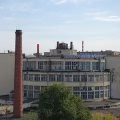
- Хлебозавод №9 · Креативный квартал · м. Дмитровская
- 6 минут пешкомФлакон · Дизайн-завод
Два креативных квартала рядом: еда, бары и маркеты, можно переходить из одного в другой.
Открыть план: Бары Хлебозавода и ФлаконаПозвать сюда: Бары Хлебозавода и Флакона
Фото: Bezik, CC BY-SA 4.0 · Wikimedia Commons
- Останкинская башня · Смотровая площадка · м. Бутырская
- 21 минута пешкомДом-музей Королёва · Музей
- 9 минут пешкомМузей космонавтики · Музей
Город с 337 метров со стеклянным полом (возьмите паспорт), потом минут двадцать прогулкой до дома, где жил конструктор Сергей Королёв, а оттуда меньше десяти минут до Музея космонавтики с настоящими спускаемыми аппаратами.
Открыть план: Башня и космосПозвать сюда: Башня и космос
Фото: Klodklodklod77, CC BY-SA 4.0 · Wikimedia Commons
- Парк Горького · Парк · м. Октябрьская
- 11 минут пешкомSUBSTANCE · Бильярд-бистро
Прогулка по набережной и пара партий в бильярд-бистро SUBSTANCE.
Открыть план: Бильярд в Парке ГорькогоПозвать сюда: Бильярд в Парке Горького
Фото: A.Savin, Free Art License · Wikimedia Commons
- Бородинская панорама · Музей · м. Парк Победы
- 2 минуты пешкомAtlantica Seafood · Рыбный ресторан
Сначала круговое полотно Рубо о Бородинском сражении, а потом устрицы и рыба в Atlantica в двух минутах пешком. Учтите: по пятницам панорама закрыта.
Открыть план: Бородино и морепродуктыПозвать сюда: Бородино и морепродукты
Фото: Alex 'Florstein' Fedorov, CC BY-SA 4.0 · Wikimedia Commons
- Бункер-42 · Музей и ресторан под землёй · м. Таганская
- 9 минут пешкомRestaurant by Deep Fried Friends · Ресторан-бар
Экскурсия в секретный бункер холодной войны на глубине 65 метров, а потом бистро и коктейльный паб в Deep Fried Friends в девяти минутах пешком.
Открыть план: Бункер холодной войныПозвать сюда: Бункер холодной войны
Фото: Fastboy, CC BY-SA 3.0 · Wikimedia Commons
- Сад им. Баумана · Сад · м. Красные Ворота
- 12 минут пешкомUrban Winery · Городская винодельня
Сад Баумана и городская винодельня, где вино делают прямо здесь.
Открыть план: Вино с производстваПозвать сюда: Вино с производства
Фото здания: Svetlov Artem, CC BY 4.0 · Wikimedia Commons
- Культурный центр ЗИЛ · Культурный центр · м. Автозаводская
- 8 минут пешкомАвлабар · Грузинский ресторан
Конструктивистский дворец культуры ЗИЛ и хинкали в «Авлабаре» у Автозаводской.
Открыть план: ДК ЗИЛ и ГрузияПозвать сюда: ДК ЗИЛ и Грузия
Фото: NVO, CC BY-SA 3.0 · Wikimedia Commons
- Парк «Зарядье» · Парк · м. Китай-город
- 9 минут пешкомBrasserie Lambic · Пивной ресторан
Прогулка по Парящему мосту, потом мидии и двести сортов пива в брассери за десять минут.
Открыть план: Зарядье и бельгийское пивоПозвать сюда: Зарядье и бельгийское пиво
Фото: Alina Vozna, CC BY-SA 4.0 · Wikimedia Commons
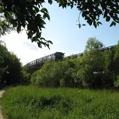
- Измайловский парк · Парк · м. Партизанская
- 12 минут пешкомИзмайловский кремль · Культурный комплекс
Большой круг по осеннему лесопарку с прудами, потом деревянный кремль: музеи, мастер-классы и блошиный «Вернисаж» рядом.
Открыть план: Измайлово на весь деньПозвать сюда: Измайлово на весь день
Фото: d.wine, CC BY-SA 2.5 · Wikimedia Commons
- Воробьёвы горы · Парк и смотровая · м. Воробьёвы горы
- 8 минут пешкомКанатная дорога · Канатная дорога
Пешком по жёлтым склонам Воробьёвых гор, потом кабинка над рекой в Лужники.
Открыть план: Канатка над осенним лесомПозвать сюда: Канатка над осенним лесом
Фото: Niklitov, CC BY-SA 4.0 · Wikimedia Commons
- ROKU · Компьютерный клуб · м. Новослободская
- 3 минуты пешкомTaco Project · Мексиканское кафе
Пара часов в премиальном кибер-лаундже у Новослободской с топовым железом и VIP-комнатами, а через три минуты тако с открытой кухни в Taco Project.
Открыть план: Катка в ROKU и такоПозвать сюда: Катка в ROKU и тако
Фото: Stolbovsky, CC BY-SA 3.0 · Wikimedia Commons
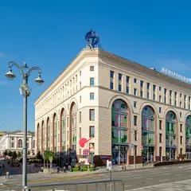
- WINSTRIKE Arena · Компьютерный клуб · киберарена · м. Лубянка
- 1 минута пешкомСмотровая ЦДМ · Смотровая площадка
Пара часов на киберарене, потом лифт на бесплатную смотровую на крыше того же здания — Кремль как на ладони.
Открыть план: Катка и крыша Детского мираПозвать сюда: Катка и крыша Детского мира
Фото здания: Никонико962, CC BY-SA 4.0 · Wikimedia Commons


Места для большой компании 24 из 149
ул. Мясницкая, 42, стр. 2
Готический гастробар во дворах Мясницкой: свечи, белые полотна и росписи с ангелами. Днём завтраки и сэндвичи, по пятницам и субботам — танцы и DJ.
Подробнее и маршрут: KeepПозвать сюда: Keep
Фото здания: Никонико962, CC BY-SA 4.0 · Wikimedia Commons
Пятницкая ул., 30, стр. 1
Новое
Советская рюмочная в духе 80-х: с вс по чт «народное караоке» с ведущим, в пт–сб дискотека с хоровым пением, по вт и ср — стендап. Настойки, закуски, до 6 утра.
Подробнее и маршрут: ЕвгеничПозвать сюда: Евгенич
Фото здания: Interstep75, CC BY-SA 4.0 · Wikimedia Commons
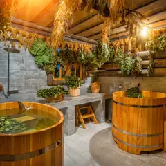
Новая Басманная ул., 16, стр. 8
Новое
Сруб из карельского сухостоя у Красных Ворот: парение с банщиком на дровах, травяной чай с мёдом и квас. Алкоголь под запретом, программы от 35 000 ₽.
Подробнее и маршрут: ЖивицаПозвать сюда: Живица
Фото здания: Александр Сигачёв, CC BY-SA 4.0 · Wikimedia Commons
Столярный пер., 7, стр. 1
Финская сауна, турецкий хамам, бассейн с подсветкой и даже караоке.
Подробнее и маршрут: Краснопресненские баниПозвать сюда: Краснопресненские бани
Фото: Никонико962, CC BY-SA 4.0 · Wikimedia Commons
Кутузовский просп., 36, стр. 4
Новое
Бильярдная на Кутузовском: 22 русских стола, пул и снукер, крафтовое пиво и кухня, музыка 80–90-х. Стол — 800–1 300 ₽/ч. С 7 утра до 3 ночи.
Подробнее и маршрут: Кутузовский бильярдный клубПозвать сюда: Кутузовский бильярдный клуб
Фото: Александр Сигачёв, CC BY-SA 4.0 · Wikimedia Commons
ул. Сретенка, 34/1, стр. 1
Новое
Клуб на Сретенке от команды StandUp Brothers: открытые и ночные микрофоны, «чёрный» стендап, сборные концерты комиков с ТВ. Опен-майк — от 400 ₽.
Подробнее и маршрут: Московский стендап клуб (Comedy 34)Позвать сюда: Московский стендап клуб (Comedy 34)
Фото здания: NVO, CC BY-SA 3.0 · Wikimedia Commons
Рочдельская ул., 15, стр. 30
Раки, морепродукты и караоке до шести утра на Трёхгорке.
Подробнее и маршрут: РаковарняПозвать сюда: Раковарня
Фото: Ludvig14, CC BY-SA 4.0 · Wikimedia Commons
ул. Усачёва, 10, стр. 1
Новое
Бани с почти вековой историей в Хамовниках после реконструкции: три мужских разряда, женское отделение и VIP-кабинеты для своих. Свежий пар каждый час.
Подробнее и маршрут: Усачёвские баниПозвать сюда: Усачёвские бани
Фото: Ludvig14, CC BY-SA 4.0 · Wikimedia Commons
Рождественский бул., 1
65+ корнеров с кухнями мира, по четвергам–субботам вечеринки. До 23:00, в чт–сб до полуночи.
Подробнее и маршрут: Центральный рынокПозвать сюда: Центральный рынок
Фото: T3ru, CC BY-SA 4.0 · Wikimedia Commons
ул. Большая Полянка, 1/3
Новое
Караоке Тимура Ланского в одном здании с «Чайхоной №1» на Полянке: акустика Nexo, барабаны, бэк-вокал, в пятницу живая группа. Чт–сб с 20:00, в четверг без депозита.
Подробнее и маршрут: Karaoke ProПозвать сюда: Karaoke Pro
Фото здания: Никонико962, CC BY-SA 4.0 · Wikimedia Commons
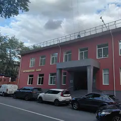
Воронцовский пер., 5/7, стр. 1
Новое
Бани с 1938 года у Таганки: два мужских и женский разряд от 3 500 ₽ за 4 часа, плюс восемь отдельных тематических бань для компании. Открыты до полуночи.
Подробнее и маршрут: Воронцовские баниПозвать сюда: Воронцовские бани
Фото: Александр Сигачёв, CC0 · Wikimedia Commons
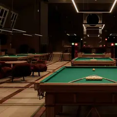
Вятская ул., 41А
15 столов русского бильярда в здании Мельникова, ресторан и VIP-зоны. 12–00.
Подробнее и маршрут: Дом русского бильярда «Москва»Позвать сюда: Дом русского бильярда «Москва»
Фото: Yartsew, CC BY-SA 4.0 · Wikimedia Commons
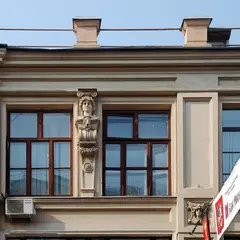
ул. Кузнецкий Мост, 3, стр. 2
Шумный караоке-бар певицы Anna Asti с шоу и диджеями.
Подробнее и маршрут: Сплетни by Anna AstiПозвать сюда: Сплетни by Anna Asti
Фото здания: user:NVO, CC BY-SA 3.0 · Wikimedia Commons
Театральный пр., 5/1 (ЦДМ, 5 этаж)
Командные VR-игры: перестрелки, зомби, квесты в виртуальной реальности.
Подробнее и маршрут: Anvio VRПозвать сюда: Anvio VR
Фото: A.Savin, CC BY-SA 3.0 · Wikimedia Commons
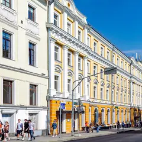
Лубянский пр., 15, стр. 2
Новое
Караоке с многолетней историей у Китай-города: зал со сценой, бэк-вокалисты и сильный звук, отдельный бар и VIP-зона. Депозит от 5000 ₽ с гостя, 18+, с 20:00 до 6 утра.
Подробнее и маршрут: Jimmy PoyПозвать сюда: Jimmy Poy
Фото здания: Никонико962, CC BY-SA 4.0 · Wikimedia Commons
Мясницкая ул., 15
Новое
Ирландский паб на Мясницкой, где футбол на экранах — обычное дело почти каждый вечер, а расписание матчей вывешивают заранее. В пятницу и субботу открыт до 6 утра.
Подробнее и маршрут: Lion's Head PubПозвать сюда: Lion's Head Pub
Фото: Дмитрий Иванов, общественное достояние · Wikimedia Commons
1-я Тверская-Ямская ул., 2, стр. 1
Гастробар у Маяковской: кухня под бокал вина для свиданий и встреч после работы.
Подробнее и маршрут: ВальдоПозвать сюда: Вальдо
Фото здания: Никонико962, CC BY-SA 4.0 · Wikimedia Commons
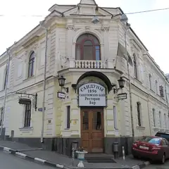
Неглинная ул., 14, стр. 4
Легендарные бани в центре: парная, бассейн и дворцовые интерьеры.
Подробнее и маршрут: Сандуновские баниПозвать сюда: Сандуновские бани
Фото: Vladimir OKC, общественное достояние · Wikimedia Commons
Селезнёвская ул., 15
Классические бани с мужскими и женским отделениями, от 1 600 ₽ за час. Понедельник — санитарный день.
Подробнее и маршрут: Селезнёвские баниПозвать сюда: Селезнёвские бани
Фото: Александр Спиридонов, CC BY 3.0 · Wikimedia Commons
ул. Остоженка, 3/14
Агуачиле, гуакамоле и «Маргарита» на мескале. До 00, в пт–сб до 01.
Подробнее и маршрут: ArrurruПозвать сюда: Arrurru
Фото здания: Architects: Ernst Nirnsee (base structure), N. A. Arkhipov, Valentin…, CC BY-SA 3.0 · Wikimedia Commons
Большая Садовая ул., 14, стр. 10
Караоке-бар на Садовом, в двух шагах от студии танцев.
Подробнее и маршрут: Karaoke LightsПозвать сюда: Karaoke Lights
Фото здания: Shakko, CC BY-SA 4.0 · Wikimedia Commons
просп. Будённого, 33
Новое
Бани с 1939 года, известные очень жарким паром: хаммам с мыльным массажем, соляная пещера, мужское и женское отделения, VIP-кабинеты для компании.
Подробнее и маршрут: Бани «Соколиная Гора»Позвать сюда: Бани «Соколиная Гора»
просп. Мира, 119, стр. 66А
Новое
Павильон ВДНХ, где собраны кухни регионов России: можно попробовать карельский суп с форелью и калитки. Места много — удобно пообедать после прогулки по выставке.
Подробнее и маршрут: Дом российской кухниПозвать сюда: Дом российской кухни
Чистопрудный бул., 10, стр. 1
Одна из старейших сетей квестов в Москве. Комнату и время выбирайте на сайте — есть с актёрами и без.
Подробнее и маршрут: КлаустрофобияПозвать сюда: Клаустрофобия


Куда сходить компанией в ближайшие две недели 8 из 45
Театр Российской армии, Большая сцена · м. Достоевская · 5 000–44 000 ₽ · 6+
Юбилейная серия сольных концертов: знаменитые песни, новые вещи и разговор с залом о жизни. Вечеров много — до 8 ноября, можно выбрать удобный.
Подробнее: Александр РозенбаумПозвать сюда: Александр РозенбаумБилеты : Александр Розенбаум (страница с билетами, откроется в новой вкладке)
Фото: tiger rus, CC BY 3.0 · Wikimedia Commons
МХТ имени Чехова, Основная сцена · м. Охотный ряд · 500–7 500 ₽ · 18+
Николай Рощин сплёл Сервантеса и Булгакова: репетиции «Дон Кихота» в театре конца 1930-х превращаются в историю о цене творчества. Около двух часов.
Подробнее: Дон КихотПозвать сюда: Дон КихотБилеты : Дон Кихот (страница с билетами, откроется в новой вкладке)
Фото: A.Savin, Free Art License · Wikimedia Commons
Медиацентр парка «Зарядье» · м. Китай-город · 12+
Выставка памяти одного из первых цифровых художников России: стереопанели, видеоарт и реконструкция мастерской. Логично совместить с прогулкой по Зарядью.
Подробнее: Мастерская новатора. Константин ХудяковПозвать сюда: Мастерская новатора. Константин ХудяковБилеты : Мастерская новатора. Константин Худяков (страница с билетами, откроется в новой вкладке)
Фото: Alina Vozna, CC BY-SA 4.0 · Wikimedia Commons
Театр на Бронной, Основная сцена · м. Тверская · от 9 000 ₽ · 16+
Константин Богомолов переносит «Ифигению в Авлиде» Еврипида в 2090 год. Масштабно, дерзко и спорно: разговоров после спектакля хватит на весь ужин.
Подробнее: Космический ветер, или мраморная девочкаПозвать сюда: Космический ветер, или мраморная девочкаБилеты : Космический ветер, или мраморная девочка (страница с билетами, откроется в новой вкладке)
РЖД Арена · м. Черкизовская
«Локомотив» играет дома, в гостях «Рубин». Зови друзей, бери шарф и приходи заранее — у стадиона до матча своя атмосфера.
Подробнее: Локомотив — РубинПозвать сюда: Локомотив — РубинБилеты : Локомотив — Рубин (страница с билетами, откроется в новой вкладке)
ГМИИ им. А. С. Пушкина, Галерея искусства стран Европы и Америки · м. Кропоткинская
Кубинские киноафиши и плакаты 1950–70-х — больше 140 листов дерзкой графики. Зайдёт и тем, кто к музеям обычно равнодушен. По понедельникам закрыто.
Подробнее: Кубинский плакат. 1950–1970-е. Кино и революцияПозвать сюда: Кубинский плакат. 1950–1970-е. Кино и революцияБилеты : Кубинский плакат. 1950–1970-е. Кино и революция (страница с билетами, откроется в новой вкладке)
Фото: Ghirlandajo, CC BY-SA 3.0 · Wikimedia Commons
Клуб Алексея Козлова · м. Китай-город · от 2 500 ₽ · 12+
Джаз-рок «Арсенала», который Алексей Козлов основал ещё в 1973-м, по пятницам — с Анной Королёвой на вокале и саксофоне. Ужин и живая музыка.
Подробнее: Анна Королёва и «Арсенал» Алексея КозловаПозвать сюда: Анна Королёва и «Арсенал» Алексея КозловаБилеты : Анна Королёва и «Арсенал» Алексея Козлова (страница с билетами, откроется в новой вкладке)
VK Stadium · м. Сокол · от 3 300 ₽ · 16+
Cream Soda с осенним туром: танцевальная электроника с грустинкой. Концерт в пятницу — вечер легко продолжить в баре.
Подробнее: Cream SodaПозвать сюда: Cream SodaБилеты : Cream Soda (страница с билетами, откроется в новой вкладке)


Как позвать
- Выбери план, место или событие — в карточке адрес, цены и маршрут в Яндекс Картах.
- Нажми «Позвать сюда» — соберётся приглашение-игра для свидания или голосование для компании.
- Отправь ссылку в любой мессенджер: тебе ответят, а компания отметит, куда и когда может. Бесплатно и без регистрации.